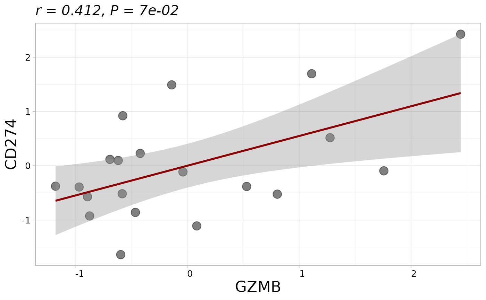

Calculates and visualizes the correlation between two variables with options for scaling, handling missing values, and incorporating grouping data.
Usage
get_cor(
eset,
pdata = NULL,
var1,
var2,
is.matrix = FALSE,
id_eset = "ID",
id_pdata = "ID",
scale = TRUE,
subtype = NULL,
na.subtype.rm = FALSE,
color_subtype = NULL,
palette = "jama",
index = NULL,
method = c("spearman", "pearson", "kendall"),
show_cor_result = TRUE,
col_line = NULL,
id = NULL,
show_label = FALSE,
point_size = 4,
title = NULL,
alpha = 0.5,
title_size = 1.5,
text_size = 10,
axis_angle = 0,
hjust = 0,
show_plot = TRUE,
save_plot = FALSE,
path = NULL,
fig.format = "png",
fig.width = 7,
fig.height = 7.3,
add.hdr.line = FALSE
)Arguments
- eset
Dataset containing the variables (data frame or matrix).
- pdata
Optional phenotype data frame. Default is `NULL`.
- var1
Name of the first variable.
- var2
Name of the second variable.
- is.matrix
Logical indicating if `eset` is a matrix with features as rows. Default is `FALSE`.
- id_eset
ID column in `eset`. Default is `"ID"`.
- id_pdata
ID column in `pdata`. Default is `"ID"`.
- scale
Logical indicating whether to scale data. Default is `TRUE`.
- subtype
Optional grouping variable for coloring points. Default is `NULL`.
- na.subtype.rm
Logical indicating whether to remove NA in subtype. Default is `FALSE`.
- color_subtype
Colors for subtypes. Default is `NULL`.
- palette
Color palette name. Default is `"jama"`.
- index
Plot index for filename. Default is `NULL` (uses 1).
- method
Correlation method: `"spearman"`, `"pearson"`, or `"kendall"`. Default is `"spearman"`.
- show_cor_result
Logical indicating whether to print correlation result. Default is `TRUE`.
- col_line
Color of regression line. Default is `NULL` (auto-determine).
- id
Column for point labels. Default is `NULL`.
- show_label
Logical indicating whether to show labels. Default is `FALSE`.
- point_size
Size of points. Default is 4.
- title
Plot title. Default is `NULL`.
- alpha
Transparency of points. Default is 0.5.
- title_size
Title font size. Default is 1.5.
- text_size
Text font size. Default is 10.
- axis_angle
Axis label angle. Default is 0.
- hjust
Horizontal justification. Default is 0.
- show_plot
Logical indicating whether to display plot. Default is `TRUE`.
- save_plot
Logical indicating whether to save plot. Default is `FALSE`.
- path
Save path. Default is `NULL`.
- fig.format
Figure format: `"png"` or `"pdf"`. Default is `"png"`.
- fig.width
Figure width in inches. Default is 7.
- fig.height
Figure height in inches. Default is 7.3.
- add.hdr.line
Logical for adding HDR (high density region) lines. Default is `FALSE`.
Examples
eset_tme_stad <- load_data("eset_tme_stad")
get_cor(
eset = eset_tme_stad,
is.matrix = TRUE,
var1 = "GZMB",
var2 = "CD274"
)
#> ℹ Calculating spearman correlation (n = 375)
#>
#> Spearman's rank correlation rho
#>
#> data: data[[var1]] and data[[var2]]
#> S = 2737736, p-value < 2.2e-16
#> alternative hypothesis: true rho is not equal to 0
#> sample estimates:
#> rho
#> 0.6885043
#>
#> ℹ Exact p-value: 5.4e-54
#> `geom_smooth()` using formula = 'y ~ x'
